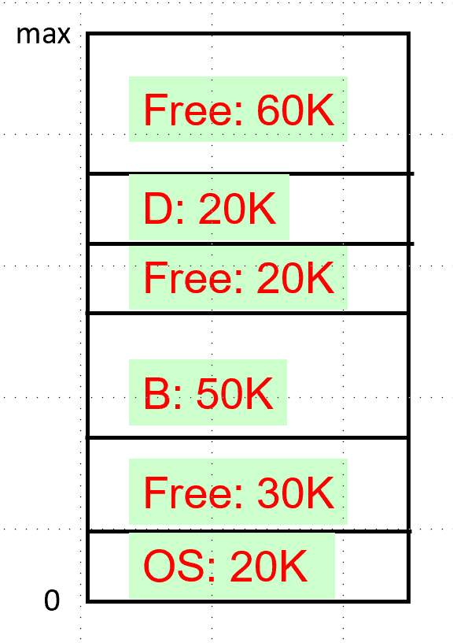
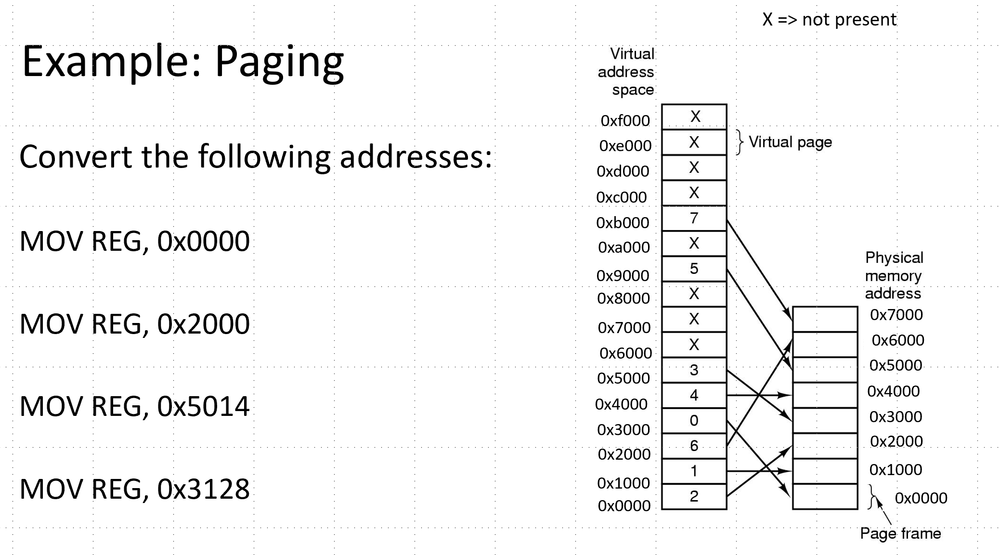
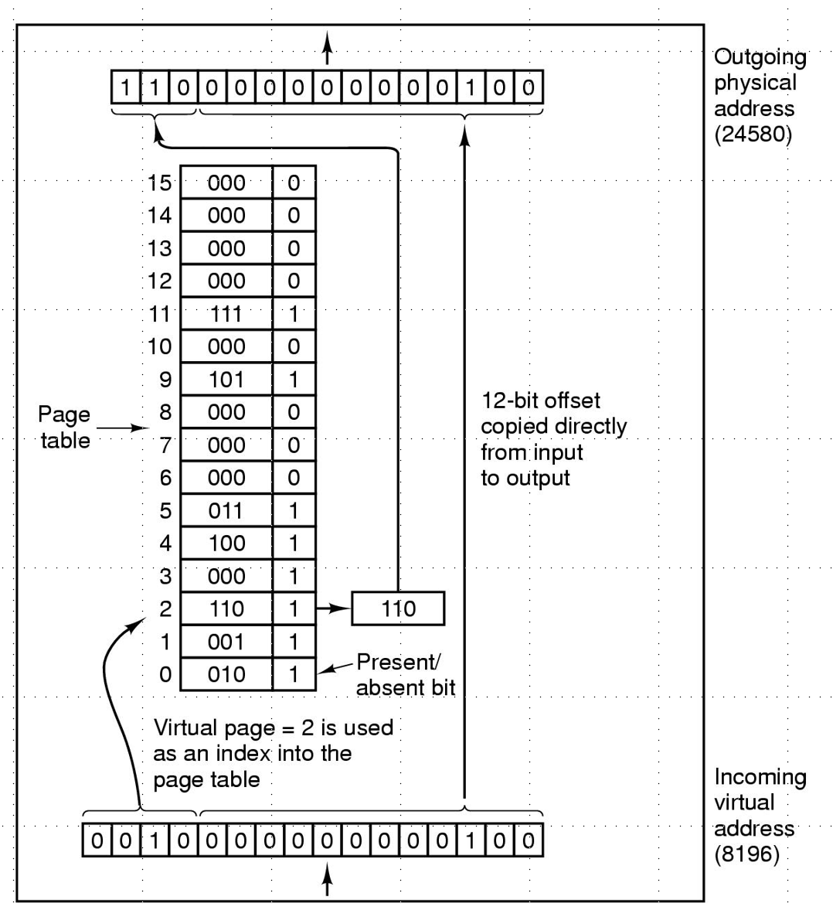
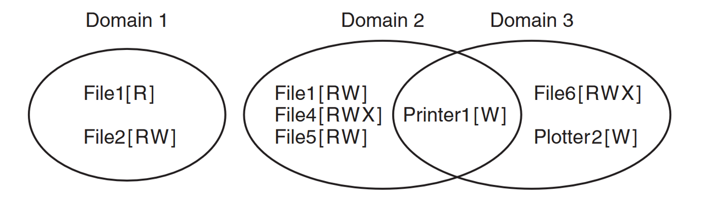

Memory hierarchy arranges memory such that small, fast memory is near the CPU and slow, high capacity memory is far away. This arrangement uses layers of caching so that memory lookups for frequently used memory can be fast.
Describe the levels of the memory hierarchy.
Memory hierarchy arranges memory such that small, fast memory is near the CPU
and slow, high capacity memory is far away. This arrangement uses layers of
caching so that memory lookups for frequently used memory can be fast.
Name 3 types of secondary storage.
Cloud storage, USB, SATA Disk
Name 3 types of primary storage.
registers, RAM, on-board cpu caches
How do primary storage and secondary storage differ in terms of their characteristics?
Primary storage is volatile, fast, expensive, and low capacity; secondary
storage is non-volatile, high capacity, slow, cheap
Give two disadvantages of a simple process memory model in which the entire process is loaded contiguously in memory?
Fewer processes can be loaded at once because gaps may not be large enough
Entire processes must be swapped in and out of memory (slow)
Memory utilisation is lower than it could be due to external fragmentation
What is virtual memory?
Virtual memory is an abstraction for physical memory used by processes. VM
can be much larger than physical memory and allows processes to be split
into pages that can be placed arbitrarily in memory.
List two advantages of decoupling the process address space from the machine’s physical memory.
No need to remap addresses in assembly code;
Process's address space need not be contiguous in memory;
Easy to protect processes from accessing other process's memory
Suppose we are using a 10K blocksize. Give the bitmap that represents the free blocks in memory.

Suppose we have processes in memory as follows. Suppose a new process requests 15K, which hole should we use if we were using a strategy of best fit, worst fit, and first fit?
Suppose we are using bitmaps to manage free space for a 1 GB disk. How big must the bitmap be if we use 4 KB blocks?
2^30/2^12 blocks -> divide by 8 to get the number of bytes
What is the memory mapping unit (MMU) and where is it used?
// The memory mapping unit translates virtual addresses to physical addresses.
What is a page? What is a page frame?
// A page is a fixed-size, contiguous chunk of virtual memory
// A page frame is a fixed-size, contiguous chunk of physical memory
What is paging?
// Paging is the process of swapping pages into/out of memory
What is a page fault?
// A page fault occurs when we try to access a page that is not loaded into memory.
// In this case, we must fetch the missing page (and possibly swap an existing page out)
What is a page table?
// A page table stores the relationships between virtual and physical pages
Suppose we have the following specifications: 16-bit addresses, 32 KB of physical memory, and 4KB page sizes.
What is the possible range of virtual addresses?
How many pages do we have?
How many page frames do we have?
// 0 to pow(2, 16)-1
// 2^(16) / 2^(12) = 2^4 = 16 pages
// 2^(5) * 2 ^(10) / 2^(12) = 2^3 = 8 page frames
Compute physical addresses for the virtual addresses using the commands below.

Suppose we have 4 KB pages 16-bit addresses. Also suppose our page table looks as follows. Convert the address 0x2004.

// 0xc004
What is the purpose of the translation lookaside buffer?
The translation lookaside buffer (TLB) is a small hardware device for
mapping virtual addresses to physical addresses without going through page table.
Suppose we have 32-bit addresses, 4 KB page sizes, and a two-level page table. Suppose the first 10 bits are an index into the first page table. The next 10 bits are an index into the second page table. Compute the indices into the page tables and offset for the following address
0x00403004
// 0b 0000 0000 01 00 0000 0011 0000 0000 0100
// First page table index: 1
// Second page table index: 3
// Within page index: 4
What is the advantage of multi-level page tables? What about inverted page tables?
// Reduces the size of the page table
// An inverted page table stores index based on page frames, not virtual pages
What would the optimal page replacement algorithm be in a perfect world?
// To replace the page that will be used the least in the future
In the NRU algorithm, list the 4 categories of pages.
// Not referenced, not modified
// Not references, modified
// Referenced, not modified
// References, modified
Give a limitation of the NRU algorithm.
// Must go through the entire page table
// Rough approximation of whether a page is likely to be accessed again
Give a limitation of the FIFO algorithm.
// FIFO removes the page at the beginning of the list
// the first page, e.g. the one that has been in memory the longest,
might be a frequently used page
Give a limitation of the NFU algorithm.
NFU stores a count for each page, but the count doesn't take into account recency
What is the difference between NFU and LFU?
// NFU stores a count for each page. LFU reduces the count over time
What is demand paging and why is it efficient?
// demand paging means only loading pages as they are needed
What is thrashing?
If memory is too small to hold the entire working set, many instructions
will lead to page faults. This is called thrashing
In regards to paging, what is the working set?
// The working set is the set of pages that are in use at a given time.
Suppose we are using the working set page replacement algorithm. tau = 500 and the current virtual time is 2204. Which pages are in the current working set?
Page | Time of Last use | R Bit | M Bit |
3 | 2014 | 1 | 1 |
2 | 2020 | 1 | 1 |
1 | 1620 | 0 | 1 |
0 | 2032 | 1 | 1 |
Pages accessed after 1704 are in the working set. => Pages 0, 2, 3
Suppose the address of x is 0x4c568000. Give the new address of x
int* x = &a;
x++;
0x4c568004
Suppose the address of x is 0x4c568000. Give the new address of x
char* x = &c;
x--;
0x4c567ffe
Suppose the address of x is 0x4c568000. Give the new address of x
struct m {
int q;
char buff[4];
};
struct m* x = &data;
x+=2;What is a file?
// A file is a logical collection of information
What is a file system?
A file system is the software responsible for creating, destroying, organizing,
reading, writing, modifying, moving, and controlling access to files
Give some examples of file attributes?
Give two different designs for storing file attributes in a file system.
// With inodes or in directories
Give two possible designs for managing free space within a file system.
// bitmaps or linked lists
How does the block size for files possibly affect fragmentation?
// too big and we waste space within each block.
What is the difference between absolute and relative paths?
What is a symbolic link?
A sym link shares a file in multiple directories without copying the
contents to multiple places
Describe the process of booting a computer.
BIOS executes the master boot record (MBR)
The MBR locates the active partition, reads the first block (called the boot block)
and executes the code stored there
What is the Master Boot Record (MBR)?
// The MBR is executed first when you boot your computer
What is a partition?
// Disks can be split into partitions, or big chunks of contiguous memory.
// Each partition can have its own file system
Define internal versus external fragmentation.
List 4 goals of file system design.
//Fast sequential access
//Fast random access
//Ability to dynamically grow
//Minimum fragmentation
Consider the following series of commands. Assume the starting current working directory is root. If we were using inodes, how many inodes would we need to represent the above file system?
$ mkdir B
$ cd B
$ mkdir A
$ touch 6.txtSuppose we are using inodes. Describe the steps needed to lookup the file with path /usr/ast/mbox
Suppose we are using FAT. Describe the steps needed to lookup the file with path /usr/ast/mbox
Suppose we are using inodes. Describe the steps needed to lookup the file with path ../ast/mbox
Consider a hierarchical file system implemented using inodes. What three things need to happen when a file is deleted?
// update the inode list
// Update the free list
// update the directory
If a crash occurs while deleting a file, how might the system become in an inconsistent state?
Explain how journaling can help a file system recover from crashes.
In a journaling system, we keep track of all sub-tasks needed to complete
a task. If not all sub-tasks complete, we retry until successful.
Why do journaling systems rely on indempotent actions?
// An indompotent action can be repeated multiple times to produce the same result
// Because the actions will be repeated until the task successfully repeats.
What is the difference between soft and hard caps in quota systems.
Why might a quota system be necessary in a multiuser system?
List three challenges of creating a good backup system.
//Copying files is time consuming
//Need to make it easy to recover from common mistakes
//Need to make it possible to restore to different points in the past
How does an incremental backup work?
// Only save files/directories that have changed
List two methods for making backups faster.
// compression
// snapshots
What is the difference between a physical and logical file system dump?
// physical saves all of memory sequentially from start to end
// logical only saves files/directories that have changed
List three limitations of physical dumps for backups.
// saves unused blocks, unchanged files
// might save “bad blocks” or blocks that should be ignored, such as system files
// Difficult/slow to restore a single file on request
List the steps needed to created a logical dump.
// Identify all files and directories that have changed
// Identity all directories containing changed files/directories
// Save identified files/directories out
List the steps needed to restore a logical dump.
// Restore all diretories
// Restore all files
How can blocks be checked for inconsistencies?
// Count references to blocks in freelist/bitmap
// Count references to blocks from inodes
How can directories be checked for inconsistencies?
// Count references to inodes from directories
// Check number of links in each inode
Suppose we have an inode based file system for which we are checking for inconsistencies. Is the following system consistent?
Blocks in use | 1 | 1 | 0 | 1 | 1 | 0 |
Free blocks | 0 | 0 | 1 | 0 | 0 | 1 |
Suppose we have an inode based file system for which we are checking for inconsistencies. Is the following system consistent?
Blocks in use | 1 | 0 | 0 | 2 | 1 | 0 |
Free blocks | 0 | 1 | 1 | 0 | 0 | 1 |
Suppose we have an inode based file system for which we are checking for inconsistencies. Is the following system consistent?
Blocks in use | 1 | 0 | 0 | 1 | 1 | 0 |
Free blocks | 0 | 2 | 1 | 0 | 0 | 1 |
Suppose we have an inode based file system for which we are checking for inconsistencies. Is the following system consistent?
Blocks in use | 1 | 0 | 0 | 1 | 1 | 0 |
Free blocks | 0 | 0 | 1 | 0 | 0 | 1 |
A file contains a link count of two. What does this mean?
A file contains a link count of three, but it is only listed in two directories. What problems might result due to this inconsistency?
A file contains a link count of one, but it is listed in two directories. What problems might results due to this inconsistency?
List three features that improve disk read/write performance.
// caching
// block read-ahead
// reducing arm read motion
What is a write-through cache?
// A cache that writes modified data back to persistent storage
Suppose we are using caching for a file system in order to increase its performance. What is the risk of writing file blocks infrequently back to disk?
// If the system crashes, the data in the cache is lost
Suppose we are using caching for a file system in order to increase its performance. What is the risk of writing file inodes infrequently back to disk?
// If the system crashes, the file is corrupted
Suppose we have an inode file system with the following properties:
Blocksize: 16 bytes
Block ids are 4-byte integers
How many block IDS can we store in an indirect block?
16/4 = 4 IDS
Suppose we have an inode file system with the following properties:
Blocksize: 16 bytes
4 direct blocks
4 indirect blocks
What is the max file size we can store?
Suppose we are using a FAT for a file system that contains one directory (/) which contains two files: A.txt and B.txt.
All directories fit inside a 1 KB block.
Suppose the root directory is at block 0
Suppose A.txt uses blocks 2, 6, 7
Suppose B.txt uses blocks 3, 4, 8
Draw the contents of the first 10 FAT entries
Give an example of a block device
// Disks, USBs, etc
Give an example of a character device
// E.g. Printers, Terminals, Network interfaces, Mice (pointing devices), Keyboard
What is a character device?
// operates on a stream of characters, is not addressable and does not have seek operations
What is a block device?
// stores information in fixed-sized blocks, each with its own address
Name the five I/O software layers found in UNIX systems.
// User-level
// Device-independent
// Device drivers
// Interrupt handlers
// Hardware
Why is I/O organized into layers, e.g. what is the advantage of this approach?
// Different devices can be handled in the same way by the user
// Common interfaces make it easier to add new devices
// The details of using each device is abstracted
// Errors can be handled without the user needing to be aware of them
Name the two components of device controllers
// electrical component (controller)
// mechanical components
Name two approaches for communicating with devices from the OS.
// Separate I/O space and memory spaces
// Memory-mapped I/O
What is an I/O port?
// control register for a device, labeled with an integer.
What is the advantage of using memory-mapped I/O over supporting separate spaces for memory and devices?
//Can be written without assembly (easier)
//No special protection mechanisms are needed
//No special instructions need to be supported
What are some challenges of using memory-mapped I/O?
// Makes caching more complicated
// Bus optimizations are more complicated
How does the OS communicate with devices when using a separate space for memory and devices?
// control registers and data buffer, using special assembly instructions
How does the OS communicate with devices when using memory-mapped I/O?
// through special memory addresses that are assigned to device IO ports
What is the purpose of Direct Memory Access (DMA)?
The OS offloads reading and writing data to a controller so it can
work on other tasks in the meantime
List the steps that happen when an interrupt occurs due to a device event.
// Interrupt number is used to lookup a handler
// Current process is stopped and their state saved
// Run the handler
// Acknowledge the interrupt
// Resume the stopped process
List three approaches to I/O handling
// programmed i/o (polling)
// interrupt-driven i/o (cpu handles many interrupts)
// i/o with direct memory access (cpu received one interrupt when DMA is done)
What is a device driver?
//A device driver is software that implements device-specific code for an operating system
What is the goal of the device-independent software layer?
// Provide a uniform interface for working with devices
Name a technique that enables different devices to be accessed in a similar way (uniform interfacing).
// API specifications for drivers
// Naming conventions (/dev/disk0, /dev/tty)
// Shared error reporting interface
What is buffering?
// Buffering refers to the practice of accumulating data in an array for reading or writing.
What is spooling? Give an example of a device that performs spooling.
Spooling refers to saving requests in files.
Printers use spooling.
Consider the five layers of the I/O system. List a primary function for each of the following
user process layer?
device-independent software layer?
device drivers?
interrupt handlers?
hardware?
// make IO calls; format IO, spooling
// naming, protection, blocking, buffering, allocation
// setup device registers; check status
// wake of driver when io complete
// perform io operation
Why is device independence an important principle of I/O programming?
Programs can access any I/O device without needed to know the specifics
of how that device works.
Why is handling errors as close to the hardware as possible a principle of I/O Programming?
If an error can be gracefully resolved without notifying the user,
the user doesn't need to know
Give an example of how names are used to provide device-independence on UNIX systems.
// file names are used in UNIX to refer to devices /dev/lp, /dev/tty, /dev/disk0 etc
What is the difference between synchronous and asynchronous transfers of data.
What is the difference between sharable and dedicated devices? Give an example of each.
A shareable device can be used simultaneously by different processes (memory);
A dedicated devcie can only be used by one process at a time (printer)
Give 3 examples of user-triggered events that are common in graphical user interfaces.
// mouse press, keyboard press, resize window, etc
Give 3 examples of widgets that are common in graphical user interfaces.
// button, labels, scroll bars, dropdown list etc
What is a virtual machine?
// A simulated computer
Give 3 reasons why we might want to use a virtual machine.
// Run a program in a safe, sandboxed environment
// Test on multiple platforms using a single machine
// Store a program with its running environment so it can always be run
// Prototype new systems on an existing system
// Multiple clients can share the same hardware
What are three requirements for virtualization
// Safety: hypervisor should have full control of virtualized resources.
// Fidelity: virtual machine should behave identically ro running on bare hardware.
// Efficiency: VM should mostly run without intervention by hypervisor.
In a virtual machine, what is the difference between a sensitive instruction and priviledged instruction?
// A sensitive instruction behaves differently in user vs kernel mode
// A privileged instruction causes a trap in user mode
A machine is virtualizable if the sensitive instructions are a subset of the priviledged instructions. Why?
// Anything sensitive that needs kernel mode should generate a trap
What is a hypervisor?
// Layer that mediates between the VM and hwardware
// (aka Virtual Machine Monitor)
What is the difference between a type 1 and type 2 hypervisor?
// type 1: Directly accesses hardware like a real OS (ex. WSL2)
// type 2: Accesses hardware through the host OS (ex. Virtual Box)
What is a cloud? How might the cloud use virtual machines?
// The cloud is a collection of many servers, typically managed in a data center
// Users share a server through independent VMs, each with limited CPU/memory
In the context of security,
what is a vulnerability?
what is an exploit?
what is a malware?
// A vulnerability is a bug that impacts security of a system
// Inputs that trigger a security bug are called an exploit
// Malware is malicious software that is installed on a user's machine without their consent
List an OS/compiler feature that make buffer overflow exploits more difficult.
// noop sled
// stack randomization
// buffer canaries
// stack corruption detection
// strict code/intruction regions
Name three categories of security threats.
// confidentiality
// integrity
// availability
Give an example of an application that requires integrity and availability, but not confidentiality.
News, wikipedia, maps
What is cryptography?
// Shuffling data so it can only be read by someone with a key
// Study of techniques for keeping data secret
What is software hardening?
Protection features that make it hard for attackers to make a system
behave in ways that are not intended.
Exs: remove unneeded services, applying security fixes, etc
What is the principle of least authority?
// Each domain should have the least amount of privileges necessary to do its work.
What is a protection domain?
// A set of (object, right) pairs
In the context of protection domains, give an example of an object, a domain, and a right.
// domain = user, object = file, right = read/write/execute
Consider the following protection domain.

Represent the protection domains above as protection matrix
Consider the following protection domain.
Represent the protection domains above as protection matrix
Consider the following protection domain.
Represent the protection domains above using Capabilities. Assume each user is running a single process with the same file needs as the diagram.
In the domain of cryptography, what is authentication?
// verifying the identity of an individual or message
What is Kerckhoff’s Principle?
// The strength of the encryption should be due to the key and not the algorithm
What major limitation of secret-key cryptography does public-key cryptography solve?
Both parties need to have the same key -- how can we share keys safely?
Public-key cryptography using distinct keys, one of which is safe to share publicly.
What property does secret-key cryptography have?
// given the encryption key, it is easy to find the description key
What property does public-key cryptography have?
== Question
What property does one-way function cryptography have?
// given the encrypt key, the decrypt key is very hard to crack
// Given encrypted data, the original message is impossible to guess
// Computing y = f(x) is easy but x = fInverse(y) is hard
Secure Hash Algorithms (SHA) are an example of what type of cryptographic function?
// one-way
How does a signature block work for digitally-signed documents?
We check the SHA (Secure Hash Algorithm) of the document against the
un-decrypted digital signature. If they match the document is untampered with.
What is the purpose of a certificate authority? E.g. what problem do they solve?
// how to share public keys with users who we don't interact with directly
List 3 basic principles of identity authentication.
// Something the user knows, has, or is
Describe how passwords can be stored securely within a system file.
// passwords shoudl be encrypted with system-specific salt
Give three examples of insider attacks.
// logic bombs
// login spoofing
// back door
What is a worm?
// malware that replicates itself
What is a botnet?
// set of computers working together via malware
What is a trojan horse malware?
// embedding malware inside a useful application
What is a drive-by-download?
// visiting a website installs malware
What is ransomware?
// malware that locks your machine until you pay a ransom
What is a virus.
// a virus is malware that can reproduce itself by attaching its code to another program
Name a type of virus.
// companion
// overwrite
// parasitic
// memory
// boot sector virus
// device driver
// macro virus
Why did the Morris worm sometimes bring down computers so they could not be used at all?
// It continually installed multiple copies of itself on the same machine
What is a rootkit?
A rootkit is a program that attempts to conceal its existence by hiding in
places where it cannot be scanned
What is spyware?
Spyware is software that surreptitiously runs in the background,
doing other work, such as marketing telemetry
Give some examples of how spyware might modify your computer.
// Change your browser
// Add shortcuts
// Place ads in standard windows dialogs
Give an example of a defense against malware.
// firewall
// virus scanner
// code signing
// jail/sandboxes